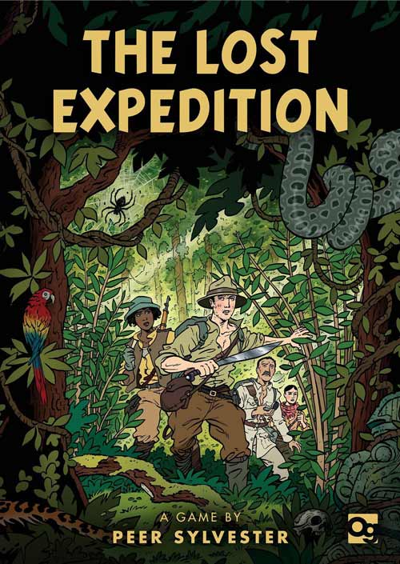
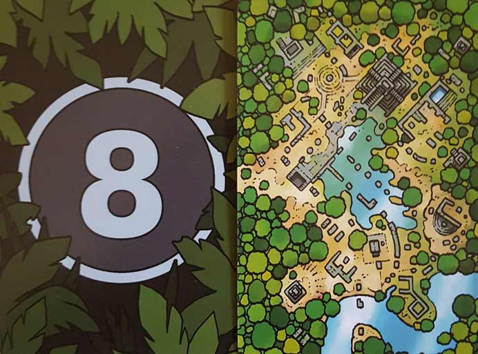
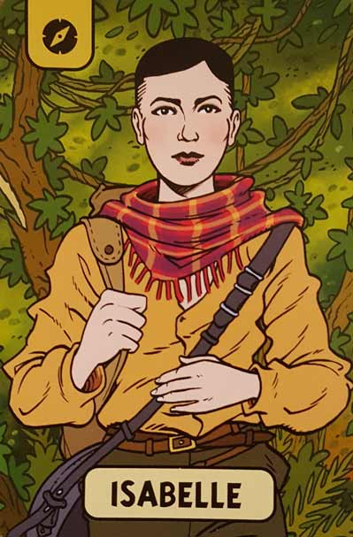
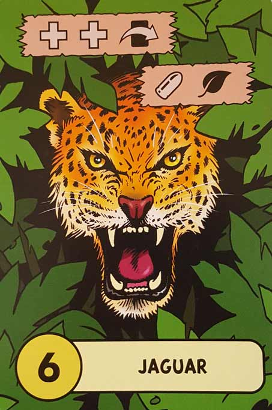
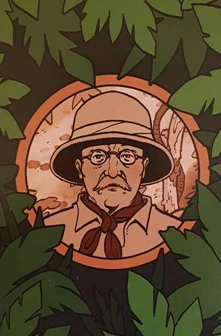
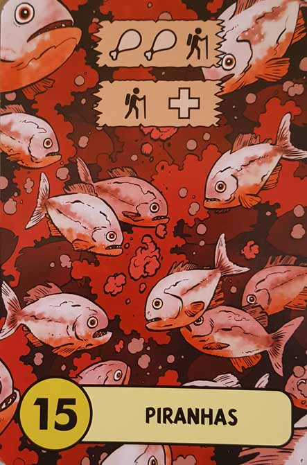
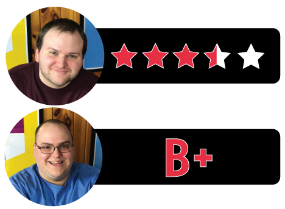

In this The Lost Expedition review, D and Will break down the adventure card game from designer Peer Sylvester and publisher Osprey Games. Percy Fawcett went missing during his search for El Dorado (aka The Lost City of Z), and it’s time for you and a team of explorers to find him. But big questions remain – did he find the City of Z? And if so, will you and your companions survive long enough to reach him? The answer is in the cards. For more on this addictive cooperative game, check out our reviews below.

D reviews The Lost Expedition
 (Author’s
note: this review is meant to accompany our gameplay video and will not
go in-depth on the game’s rules. If you’re interested in learning how
the game is played, please watch the video. It’s not bad.)
(Author’s
note: this review is meant to accompany our gameplay video and will not
go in-depth on the game’s rules. If you’re interested in learning how
the game is played, please watch the video. It’s not bad.)
It’s difficult to review The Lost Expedition without comparing it to The Grizzled, so… that’s what I’m going to do. The games are so similar that I’m still surprised they weren’t designed by the same people. Or produced by the same company. Or at least drawn by the same artist. They’re both difficult, card-based games in which players must work together to help the characters survive near-constant peril. They’re also both set in the early 20th century and feature a similar, cartoon art-style that hearkens back to the era in which they’re is set. There are differences, of course. Enough differences to avoid a lawsuit, and also enough differences for me to pretty confidently say that one game is better than the other, so let’s get to those.
Before I go further, I should mention that I’m giving this game the same rating I gave to the standard version of The Grizzled: 3.5 stars out of 5. In hindsight, I think I underrated The Grizzled a little bit. I did give the At Your Orders expansion a 4.5 rating, but the original deserves a higher rating as well. It’s a better game than The Lost Expedition, although I think they’re both worth playing. Also, this review is strictly for the game as a cooperative experience.
The main area where I think The Lost Expedition stumbles a bit compared to The Grizzled is in its balancing. Both games are hard, with TLE being the more forgiving of the two. However, perhaps paradoxically, TG actually feels like a fairer experience because it’s always hard. As a game set in the trenches of World War I, it’s appropriately punishing and almost never lets its players off the hook. Winning actually feels like surviving and losing is usually understandable. TLE does itself a disservice by providing its players with too many options, both good and bad. The two games we played in our TLE video provide a good example of what I mean. (*Spoilers*) In the first game, I’m not sure there was really anything we could have done in order to win, given the cards that we got. Opportunities to move and/or gather meaningful resources were incredibly scarce. In the second game, however, we drew cards that provided plenty of opportunities to gather strength and just enough movement options in order to win. When you know that a game is not only beatable, but sometimes borderline easy, it’s a whole lot more frustrating when it doesn’t give you a chance.
The Lost Expedition also feels a lot more impersonal than The Grizzled. The stakes feel different when each person is playing as a specific character, as opposed to everyone guiding the characters communally like some godlike beings in a world where free will doesn’t exist. Sure, Isabelle made it to the Lost City of Z, and that’s cool for her, but it would have felt more special if one of us was Isabelle and the others had sacrificed their lives along the way. Instead, Roy died because Graham hated him, and Teddy Roosevelt died because I was on a power trip. Players who are unconcerned with theme or immersion and are strictly concerned with beating the game are unlikely to be bothered with this, but I would hope such individuals are the minority. I definitely noticed a difference in attitude towards the characters and the desire the keep them alive between the two games.
I’ve now spent basically my whole review talking about how The Lost Expedition is an inferior game, and I feel kind of bad about that. The game is often fun and when you get the right balance of cards, it can provide a nice challenge to its players. The art is perhaps slightly less distinctive than what you find in The Grizzled, but it’s still mostly quite good. It also plays pretty quickly (which is good if you have some rotten luck) and is very easy to both set up and clean up. And if you like The Grizzled but would prefer something that’s not quite as bleak, this is it. Sadly, we haven’t had a chance to try out the 1-player variant, but by most accounts that’s an excellent way to play it as well. Overall, if you can only play one of the two, I would recommend The Grizzled. But if you have the opportunity, I would definitely recommend you play The Lost Expedition as well.
D’s Rating: Three and One-Half Stars out of Five.
Will reviews The Lost Expedition
 Oh
jeez, I think I need to design a cooperative, survival card game, and
soon. As someone who appreciates games that match easy-to-learn gameplay
with deep, strategic planning, I’ve come to realize that this genre
might be the best at doing just that. But more importantly, I think
games like The Lost Expedition are as much fun as you can have
on your table top in under 45 minutes. Or at least, they’re the most fun
for people who desire the occasional break from head-to-head,
contentious board gaming. Alas, this is a review of the cooperative mode
of The Lost Expedition and not of its genre, and if you couldn’t already tell, I really like this one.
Oh
jeez, I think I need to design a cooperative, survival card game, and
soon. As someone who appreciates games that match easy-to-learn gameplay
with deep, strategic planning, I’ve come to realize that this genre
might be the best at doing just that. But more importantly, I think
games like The Lost Expedition are as much fun as you can have
on your table top in under 45 minutes. Or at least, they’re the most fun
for people who desire the occasional break from head-to-head,
contentious board gaming. Alas, this is a review of the cooperative mode
of The Lost Expedition and not of its genre, and if you couldn’t already tell, I really like this one.
I always try to start my reviews with a quick overview of the game’s components and their build quality. In that regard, I can definitively say that Osprey Games put out a standout product here. The cards are sturdy and large, which is welcome in every way except for the fact that they’re somewhat difficult to shuffle. The cardboard tokens are similarly well made, if not a little small. Seriously, the dimensions of the components are all over the place, but then again, they fit snuggly in the game’s relatively compact box. Really though, none of that matters once you see The Lost Expedition’s artwork, which comes from artist Garen Ewing. This has got to be up there with my favorite tabletop game art ever – it’s that stunning. It’s unique, colorful, and fitting to the game’s theme. Most importantly, the artwork tells the game’s story, one that’s grounded in actual history and re-enacted in a one-of-a-kind way on your table.
Speaking of story, I truly love how every session of The Lost Expedition creates its own narrative. It’s actually part of the game that isn’t explicitly laid out in the rules, but you can almost play this game in a roleplaying, story-building manner. After you and the other players place down some cards, what you’re left with is an entirely unique path that could potentially produce an enthralling or hilarious story. Maybe a jaguar attacks you, but then you shoot it and take its meat. But then the wounds you suffered in that attack fester and become infected, dropping your health. That sucks, but then you reach an abandoned camp and collect a couple bullets, which is great. Crap, then you step on a beehive and get swept away in a mudslide. See what I mean? I keep replaying our sessions in my head because it’s so enjoyable to imagine, and this isn’t technically part of the game at all. Building a story is completely optional, but I recommend it because it’ll immerse you even more in the game and its theme.
When it comes to the actual gameplay and mechanics, I have mostly positive things to point out. First, I love the morning/evening cycle of the rounds. Not only does it shake things up rule-wise, but it also fits in perfectly with the theme. In the morning, adventure cards are placed and then re-arranged based on the number they show. This encourages you to be patient and strategize about which card to play next in order to avoid a string of detrimental events or even skipping something beneficial, like health or food. Thematically, this re-arranging of cards makes sense because during the daytime, you can see what’s ahead of you and plan accordingly. In the evening though, the adventure cards stay in the order that they’re placed, which means that an entirely different strategy will need to be employed when you pick what card to play and when. It also makes sense thematically because at night, in the darkness, you’ll unexpectedly stumble upon problems and deal with them in the moment.
Second, I really enjoy how challenging The Lost Expedition can be. For starters, you can’t communicate at all about the cards in your hand, which means in order to cooperate, you’ll have to trust that your fellow players will look at what you just played and adapt accordingly. Also, there’s limited food and even more limited ammo, so managing those supplies becomes stressful, in a good way. I, for one, am always trying to collect ammunition when I can, but D and Graham seem to prioritize food or expertise. I love the back and forth arguments this game causes over which thing to collect or expend, and I also love that there’s always an expedition leader who can say “screw it” and make an executive decision. Most of the time, you’re going to be desperate and feel the imminence of death weighing down on you. This is very thematically appropriate for a game about a doomed rescue mission to El Dorado. But this also means that when you get one or more adventurers to the finish line and win, you’re going to feel relief and satisfaction in a way that’s unique to this genre, and it’s a great feeling indeed.
Unfortunately, The Lost Expedition can often become too challenging or conversely, too easy. Look, it’s not like this fact is a shocker – we gamers know that the randomness of shuffling often produces a luck problem. This luck factor plagues this game as well, causing an imbalance of beneficial to detrimental cards or vice versa. It’s not uncommon for a game of The Lost Expedition to go by where your party doesn’t get anything – no health, no food, no bullets, nothing. When this happens, you’ll probably lose before you get halfway to the Lost City of Z. Alternatively, you could experience a session where you draw all of the beneficial cards early on and make it to the end with ease. I think I prefer this scenario because at least you win, but even then, it feels unearned and hollow.
In any case, if you play The Lost Expedition enough, you’ll come to realize that its good outweighs its bad most of the time. I know that many people will compare it to The Grizzled and rightfully so, since they’re in the same genre and are both properly punishing. I really like that game for many of the same reasons I like The Lost Expedition – it’s well drawn, well designed, and thematically immersive. However, I think The Lost Expedition has The Grizzled beat by a hair because it’s slightly more approachable. Then again, I think with its expansion, The Grizzled is a more refined experience. That’s why I can’t wait to try out this game’s first expansion, The Fountain of Youth & Other Adventures. After that, we’ll know for sure which game rules the cooperative, survival card game genre. Before I close, I should point out that I haven’t even tried the solo or head-to-head variants of The Lost Expedition, which I hear are equally worthy of praise. It appears this game is a gift that keeps on giving.
I give The Lost Expedition a: B+
The Lost Expedition – Board Crazy’s Ratings

Leave a Reply
You must be logged in to post a comment.